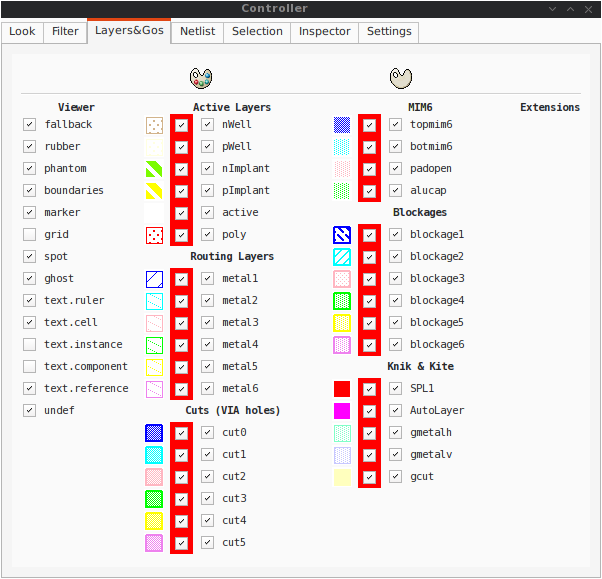
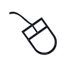
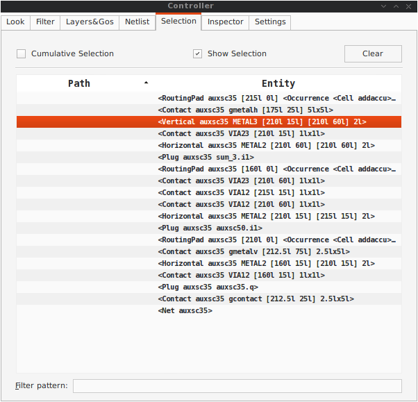
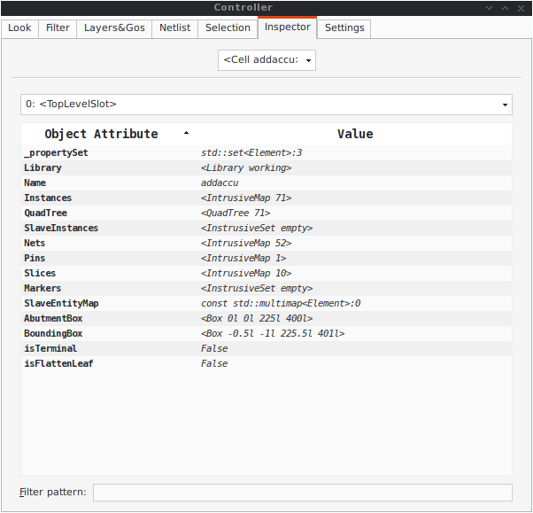
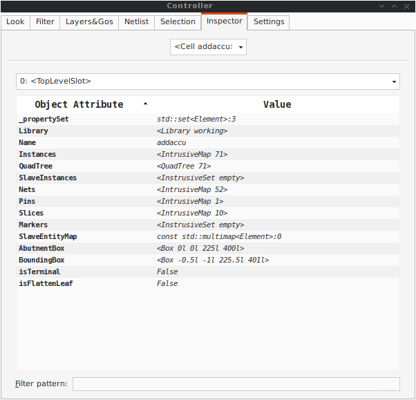

Contents
Coriolis is a set of tools for vlsi backend. It's main features are :
Coriolis is a replacement of the Alliance place and route tools.
| Hurricane | Rémy Escassut & Christian Masson |
| Etesian | Gabriel Gouvine |
| Stratus | Sophie Belloeil |
| Katana (global) | Damien Dupuis |
| Katana (detailed), Unicorn | Jean-Paul Chaput |
The Hurricane data-base is copyright© Bull 2000-2019 and is released under the terms of the lgpl license. All other tools are copyright© upmc 2008-2018, Sorbonne Université 2018-2019 and released under the gpl license.
Others important contributors to Coriolis are Christophe Alexandre, Roselyne Chotin, Hugo Clement, Marek Sroka and Wu Yifei.
The Katana router makes use of the Flute software, which is copyright© Chris C. N. Chu from the Iowa State University (http://home.eng.iastate.edu/~cnchu/).
While Coriolis can be used stand-alone, it is in fact part of a more complete design flow build upon Yosys and Alliance. In addition, a set of demos and examples are supplied in the repository alliance-check-toolkit.
Yosys : http://www.clifford.at/yosys/
An rpm packaged version is available here:
https://ftp.lip6.fr/pub/linux/distributions/slsoc/soc/7/addons/x86_64/repoview/yosys.html
Alliance : https://www-soc.lip6.fr/equipe-cian/logiciels/alliance/
alliance-check-toolkit git repository:
Note
As the sources are being released, the binary packaging is dropped. You may still find (very) old versions here: http://asim.lip6.fr/pub/coriolis/2.0 .
In a nutshell, building source consists in pulling the git repository then running the ccb installer.
Note
The documentation is already generated and commited in the git tree. You may not install the additional prerequisites for the documentation. By default the documentation is not generated, just installed by ccb. If you really want to re-generate it, add the --doc flag to ccb.
Main building prerequisites:
Building documentation prerequisites:
The following libraries get directly bundled with Coriolis:
For other distributions, refer to their own packaging system.
In order to simplify the work of the ccb installer, the source, build and installation tree is fixed. To successfully compile Coriolis you must follow it exactly. The tree is relative to the home directory of the user building it (note ~/ or $HOME/). Only the source directory needs to be manually created by the user, all others will be automatically created either by ccb or the build system.
| Sources | |
Sources root
under git
|
~/coriolis-2.x/src
~/coriolis-2.x/src/coriolis
|
| Architecture Dependant Build | |
Linux, SL 7, 64b
Linux, SL 6, 32b
Linux, SL 6, 64b
Linux, Fedora, 64b
Linux, Fedora, 32b
FreeBSD 8, 32b
FreeBSD 8, 64b
Windows 7, 32b
Windows 7, 64b
Windows 8.x, 32b
Windows 8.x, 64b
|
~/coriolis-2.x/Linux.el7_64/Release.Shared/build/<tool>
~/coriolis-2.x/Linux.slsoc6x/Release.Shared/build/<tool>
~/coriolis-2.x/Linux.slsoc6x_64/Release.Shared/build/<tool>
~/coriolis-2.x/Linux.fc_64/Release.Shared/build/<tool>
~/coriolis-2.x/Linux.fc/Release.Shared/build/<tool>
~/coriolis-2.x/FreeBSD.8x.i386/Release.Shared/build/<tool>
~/coriolis-2.x/FreeBSD.8x.amd64/Release.Shared/build/<tool>
~/coriolis-2.x/Cygwin.W7/Release.Shared/build/<tool>
~/coriolis-2.x/Cygwin.W7_64/Release.Shared/build/<tool>
~/coriolis-2.x/Cygwin.W8/Release.Shared/build/<tool>
~/coriolis-2.x/Cygwin.W8_64/Release.Shared/build/<tool>
|
| Architecture Dependant Install | |
| Linux, SL 6, 32b | ~/coriolis-2.x/Linux.slsoc6x/Release.Shared/install/ |
| FHS Compliant Structure under Install | |
Binaries
Libraries (Python)
Include by tool
Configuration files
Doc, by tool
|
.../install/bin
.../install/lib
.../install/include/coriolis2/<project>/<tool>
.../install/etc/coriolis2/
.../install/share/doc/coriolis2/en/html/<tool>
|
Note
Alternate build types: the Release.Shared means an optimized build with shared libraries. But there are also available Static instead of Shared and Debug instead of Release and any combination of them.
Static does not work because I don't know yet to mix statically linked binaries and Python modules (which must be dynamic).
The devel_anabatic branch is now closed and we go back to a more classical scheme where master is the stable version and devel the development one.
The Coriolis git repository is https://www-soc.lip6.fr/git/coriolis.git
Note
Again, the devel_anabatic branch is now closed. Please revert to devel or master.
Note
As it is now possible to mix PyQt widget with Coriolis ones, it is simpler for us to revert to qt 4 only. Our reference os being rhel 7, there is no compatible PyQt5 build compatible with their qt 5 version (we fall short of one minor, they provides qt 5.9 were we need at least qt 5.10).
Note
Under rhel 7 or clones, they upgraded their version of qt 4 (from 4.6 to 4.8) so the diagonal line bug no longer occurs. So we can safely use the default system qt again.
Install or check that the required prerequisites are installed :
dummy@lepka:~> yum install -y git cmake bison flex gcc-c++ libstdc++-devel \
binutils-devel \
boost-devel boost-python boost-filesystem \
boost-regex boost-wave \
python-devel libxml2-devel bzip2-devel \
qt-devel
The packages qwt and qwt-devel are not provided by any standard repository (like epel). You may download them from the LIP6 Addons Repository Then run:
dummy@lepka:~> yum localinstall -y qwt-6.1.2-4.fc23.x86_64.rpm \ qwt-devel-6.1.2-4.fc23.x86_64.rpm # Qwt for Qt 4.You may also install them directly (whithout an intermediate download):
dummy@lepka:~> yum install -y http://ftp.lip6.fr/pub/linux/distributions/slsoc/soc/7/addons/x86_64/RPMS/qwt-6.1.2-4.fc23.x86_64.rpm \ http://ftp.lip6.fr/pub/linux/distributions/slsoc/soc/7/addons/x86_64/RPMS/qwt-devel-6.1.2-4.fc23.x86_64.rpm
Install the unpackaged prerequisites. Currently, only RapidJSON.
dummy@lepka:~> mkdir -p ~/coriolis-2.x/src/support
dummy@lepka:support> cd ~/coriolis-2.x/src/support
dummy@lepka:support> git clone http://github.com/miloyip/rapidjson
Create the source directory and pull the git repository:
dummy@lepka:~> mkdir -p ~/coriolis-2.x/src
dummy@lepka:src> cd ~/coriolis-2.x/src
dummy@lepka:src> git clone https://www-soc.lip6.fr/git/coriolis.git
Build & install:
dummy@lepka:src> cd coriolis
dummy@lepka:coriolis> git checkout devel
dummy@lepka:coriolis> ./bootstrap/ccb.py --project=support \
--project=coriolis \
--make="-j4 install"
Note
Pre-generated documentation will get installed by the previous command. Only if you did made modifications to it you need to regenerate it with:
dummy@lepka:coriolis> ./bootstrap/ccb.py --project=support \
--project=coriolis \
--doc --make="-j1 install"
We need to perform a separate installation of the documentation because it does not support to be generated with a parallel build. So we compile & install in a first stage in -j4 (or whatever) then we generate the documentation in -j1
Under rhel6 or clones, you must build using the devtoolset, the version is to be given as argument:
dummy@lepka:coriolis> ./bootstrap/ccb.py --project=coriolis \
--devtoolset=8 --make="-j4 install"
If you want to use Qt 5 instead of Qt 4, modify the previous steps as follows:
At step 1, do not install the qt 4 related development package (qt4-devel), but instead:
dummy@lepka:~> yum install -y qt5-qtbase-devel qt5-qtsvg-devel # Qt 5.
The package qwt-qt5-devel and it's dependency qwt-qt5 are not provided by any standard repository (like epel). You may download them from the LIP6 Addons Repository Then run:
dummy@lepka:~> yum localinstall -y qwt-qt5-6.1.2-4.fc23.x86_64.rpm \
qwt-qt5-devel-6.1.2-4.fc23.x86_64.rpm # Qwt for Qt 5.
At step 4, add a --qt5 argument to the ccb.py command line.
The Python scripts that make use of PyQt in crlcore and cumulus must be edited to import PyQt5 instead of PtQt4 (should find a way to automatically switch between the two of them).
The complete list of ccb functionalities can be accessed with the --help argument. It also may be run in graphical mode (--gui).
The Release.Shared default version of the Coriolis is built stripped of symbols and optimized so that it makes analysing a core dump after a crash difficult. In the (unlikely) case of a crash, you may want to build, alongside the optimized version, a debug one which allows forensic examination by gdb (or valgrind or whatever).
Run again ccb.py, adding the --debug argument:
dummy@lepka:coriolis> ./bootstrap/ccb.py --project=support \
--project=coriolis \
--make="-j4 install" --debug
As cgt is a Python script, the right command to run gdb is:
dummy@lepka:work> gdb python core.XXXX
First, install or check that the required prerequisites are installed:
dummy@lepka:~> sudo apt-get install -y build-essential binutils-dev \
git cmake bison flex gcc python-dev \
libboost-all-dev libboost-python-dev \
zlib1g-dev libxml2-dev rapidjson-dev libbz2-dev
To use with Qt 4:
dummy@lepka:~> sudo apt-get install -y qt4-dev-tools libqwt-dev python-qt4
To use with Qt 5:
dummy@lepka:~> sudo apt-get install -y qtbase5-dev libqt5svg5-dev libqwt-qt5-dev \
python-pyqt5
Note
Do not install both versions of Qwt (for Qt 4 and Qt 5), this will confuse the installer and end up with a non functional software (it uses the headers from one Qt and libraries from the other version).
Second step is to create the source directory and pull the git repository:
dummy@lepka:~> mkdir -p ~/coriolis-2.x/src
dummy@lepka:src> cd ~/coriolis-2.x/src
dummy@lepka:src> git clone https://www-soc.lip6.fr/git/coriolis.git
Third and final step, build & install:
dummy@lepka:src> cd coriolis
dummy@lepka:coriolis> git checkout devel
dummy@lepka:coriolis> ./bootstrap/ccb.py --project=coriolis \
--make="-j4 install"
Coriolis makes use of the boost::python module, but the MacPorts boost seems unable to work with the Python bundled with MacOS. So you have to install both of them from MacPorts:
dummy@macos:~> port install boost +python27
dummy@macos:~> port select python python27
dummy@macos:-> export DYLD_FRAMEWORK_PATH=/opt/local/Library/Frameworks
The last two lines tell MacOS to use the Python from MacPorts and not from the system.
Then proceed with the generic install instructions.
Under bootstrap/docker/ scripts and configuration files are provided that allow to rebuild Alliance and Coriolis and perform the regression tests of alliance-check-toolkit. You may have a look at the Dockerfile.system configuration file to see exactly how to setup a vanilla system to build Coriolis.
To run the docker tests, call the dockerManage.sh scripts with the relevant arguments:
ego@home:debian-9> ../../dockerManage.sh -scb # build system, coriolis & bash images.
ego@home:debian-9> ../../dockerManage.sh -r # run the bash image.
ego@home:debian-9> ../../dockerManage.sh --remove # clear all images.
Packager should not use ccb, instead bootstrap/Makefile.package is provided to emulate a top-level autotool makefile. Just copy it in the root of the Coriolis git repository (~/corriolis-2.x/src/coriolis/) and build.
Sligthly outdated packaging configuration files can also be found under bootstrap/:
Coriolis relies on Alliance for the cell libraries. So after installing or packaging, you must configure it so that it can found those libraries.
The easiest way is to setup the Alliance environment (i.e. sourcing .../etc/profile.d/alc_env.{sh,csh}) before setting up Coriolis environment (see the next section). To understand how Coriolis find/setup Alliance you may have look to the Alliance Helper.
To simplify the tedious task of configuring your environment, a helper is provided in the bootstrap source directory (also installed in the directory .../install/etc/coriolis2/) :
~/coriolis-2.x/src/coriolis/bootstrap/coriolisEnv.py
Use it like this:
dummy@lepka:~> eval `~/coriolis-2.x/src/coriolis/bootstrap/coriolisEnv.py`
Note
Do not call that script in your environement initialisation. When used under rhel6 or clones, it needs to be run in the devtoolset environement. The script then launch a new shell, which may cause an infinite loop if it's called again in, say ~/.bashrc.
Instead you may want to create an alias:
alias c2r='eval "`~/coriolis-2.x/src/coriolis/bootstrap/coriolisEnv.py`"'
The Coriolis graphical interface is split up into two windows.
Features are detailed in Viewer & Tools.


Stratus is the replacement for GenLib procedural netlist capture language. It is designed as a set of Python classes, and comes with it's own documentation (Stratus Documentation)
The Alliance flow is based on the mbk data-base, which has one data-structure for each view. That is, Lofig for the logical view and Phfig for the physical view. The place and route tools were responsible for maintaining (or not) the coherency between views. Reflecting this weak coupling between views, each one was stored in a separate file with a specific format. The logical view is stored in a vst file in vhdl format and the physical in an ap file in an ad-hoc format.
The Coriolis flow is based on the Hurricane data-base, which has a unified structure for logical and physical view. That data structure is the Cell object. The Cell can have any state between pure netlist and completly placed and routed design. Although the memory representation of the views has deeply changed we still use the Alliance files format, but they now really represent views of the same object. The point is that one must be very careful about view coherency when going to and from Coriolis.
As for the second release, Coriolis can be used only for three purposes :
Coriolis supports several file formats. It can load all file format from the Alliance toolchain (.ap for layout, behavioural and structural vhdl .vbe and .vst), BLIF netlist format as well as benchmark formats from the ISPD contests.
It can be compiled with LEF/DEF support, although it requires acceptance of the SI2 license and may not be compiled in your version of the software.
You can create a BLIF file from the Yosys synthetizer, which can be imported under Coriolis. Most libraries are specified as a .lib liberty file and a .lef LEF file. Yosys opens most .lib files with minor modifications, but LEF support in Coriolis relies on SI2. If Coriolis hasn't been compiled against it, the library is given in Alliance .ap format. Some free libraries already provide both .ap and .lib files.
Once you have installed a common library under Yosys and Coriolis, just synthetize your design with Yosys and import it (as Blif without the extension) under Coriolis to perform place&route.
Alliance is an older toolchain but has been extensively used for years. Coriolis can import and write Alliance designs and libraries directly.
The Etesian placer is a state of the art (as of 2015) analytical placer. It is within 5% of other placers' solutions, but is normally a bit worse than ePlace. This Coriolis tool is actually an encapsulation of Coloquinte which is the placer.
Note
Instance Uniquification: a same logical instance cannot have two different placements. So, if you don't supply a placement for it, it will be uniquified (cloned) and you will see the copy files appears on disk upon saving.
Hierarchical Placement
The placement area is defined by the top cell abutment box.
When placing a complete hierarchy, the abutment boxes of the cells (models) other than the top cell are set identical to the one of the top cell and their instances are all placed at position (0,0,ID). That is, all the abutments boxes, whatever the hierarchical level, define the same area (they are exactly superposed).
We choose this scheme because the placer will see all the instances as virtually flattened, so they can be placed anywhere inside the top-cell abutment box.

Computing the Placement Area
The placement area is computed using the etesian.aspectRatio and etesian.spaceMargin parameters only if the top-cell has an empty abutment box. If the top-cell abutment box has to be set, then it is propagated to all the instances models recursively.
Reseting the Placement
Once a placement has been done, the placer cannot reset it (will be implemented later). To perform a new placement, you must restart cgt. In addition, if you have saved the placement on disk, you must erase any .ap file, which are automatically reloaded along with the netlist (.vst).
Limitations
Etesian supports standard cells and fixed macros. As for the Coriolis 2.1 version, it doesn't support movable macros, and you must place every macro beforehand. Timing and routability analysis are not included either, and the returned placement may be unroutable.
| Parameter Identifier | Type | Default |
|---|---|---|
| Etesian Parameters | ||
| etesian.aspectRatio | TypePercentage | 100 |
| Define the height on width H/W aspect ratio, can be comprised between 10 and 1000 | ||
| etesian.spaceMargin | TypePercentage | 5 |
| The extra white space added to the total area of the standard cells | ||
| etesian.uniformDensity | TypeBool | False |
| Whether the cells will be spread envenly across the area or allowed to form denser clusters | ||
| etesian.effort | TypeInt | 2 |
| Sets the balance between the speed of the placer and the solution quality | ||
| etesian.routingDriven | TypeBool | False |
| Whether the tool will try routing iterations and whitespace allocation to improve routability; to be implemented | ||
| etesian.graphics | TypeInt | 2 |
How often the display will be refreshed More refreshing slows the placer.
|
||
The quality of Katana global routing solutions are equivalent to those of FGR 1.0. For an in-depth description of Katana algorithms, you may download the thesis of D. Dupuis avalaible from here~: Knik Thesis (Knik has been rewritten as part of Katana, the algorithms remains essentially the same).
The global router is now deterministic.
Katana no longer suffers from the limitations of Nero. It can route big designs
as its runtime and memory footprint is almost linear (with respect to the number
of gates). It has successfully routed design of more than 150K gates.
Note
Slow Layer Assignment. Most of the time, the layer assignment stage is fast (less than a dozen seconds), but in some instances it can take more than a dozen minutes. This is a known bug and will be corrected in later releases.
After each run, Katana displays a set of completion ratios which must all be equal to 100% or (NNNN+0) if the detailed routing has been successfull. In the event of a failure, on a saturated design, you may tweak the three following configuration parameters:
The idea is to increase the horizontal and vertical local track reservation until the detailed router succeeds. But in doing so we make the task of the global router more and more difficult as the capacity of the edges decreases, and at some point it will fail too. So this is a balance.
Routing a design is done in four ordered steps:
It is possible to supply to the router a complete wiring for some nets that the user wants to be routed according to a specific topology. The supplied topology must respect the building rules of the Anabatic database (contacts must be, terminals, turns, h-tee & v-tee only). During the first step Detailed Pre-Route the router will solve overlaps between the segments, without making any dogleg. If no pre-routed topologies are present, this step may be ommited. Any net routed at this step is then fixed and become unmovable for the later stages.
After the detailed routing step the Katana data-structure is still active (the Hurricane wiring is decorated). The finalize step performs the removal of the Katana data-structure, and it is not advisable to save the design before that step.
You may visualize the density (saturation) of either the edges (global routing) or the GCells (detailed routing) until the routing is finalized. Special layers appear to that effect in the The Layers&Go Tab.
The Anabatic parameters control the layer assignment step.
All the defaults value given below are from the default Alliance technology (cmos and SxLib cell gauge/routing gauge).
| Parameter Identifier | Type | Default |
|---|---|---|
| Anabatic Parameters | ||
| anabatic.topRoutingLayer | TypeString | METAL5 |
| Define the highest metal layer that will be used for routing (inclusive). | ||
| anabatic.globalLengthThreshold | TypeInt | 1450 |
| This parameter is used by a layer assignment method which is no longer used (did not give good results) | ||
| anabatic.saturateRatio | TypePercentage | 80 |
| If M(x) density is above this ratio, move up feedthru global segments up from depth x to x+2 | ||
| anabatic.saturateRp | TypeInt | 8 |
| If a GCell contains more terminals (RoutingPad) than that number, force a move up of the connecting segments to those in excess | ||
| Katana Parameters | ||
| katana.hTracksReservedLocal | TypeInt | 3 |
| To take account the tracks needed inside a GCell to build the local routing, decrease the capacity of the edges of the global router. Horizontal and vertical locally reserved capacity can be distinguished for more accuracy. | ||
| katana.vTracksReservedLocal | TypeInt | 3 |
| cf. kite.hTracksReservedLocal | ||
| katana.eventsLimit | TypeInt | 4000002 |
| The maximum number of segment displacements, this is a last ditch safety against infinite loop. It's perhaps a little too low for big designs | ||
| katana.ripupCost | TypeInt | 3 |
| Differential introduced between two ripup costs to avoid a loop between two ripped up segments | ||
| katana.strapRipupLimit | TypeInt | 16 |
| Maximum number of ripup for strap segments | ||
| katana.localRipupLimit | TypeInt | 9 |
| Maximum number of ripup for local segments | ||
| katana.globalRipupLimit | TypeInt | 5 |
| Maximum number of ripup for global segments, when this limit is reached, triggers topologic modification | ||
| katana.longGlobalRipupLimit | TypeInt | 5 |
| Maximum number of ripup for long global segments, when this limit is reached, triggers topological modification | ||
Python/Stratus scripts can be executed either in text or graphical mode.
Note
How Cgt Locates Python Scripts: cgt uses the Python import mechanism to load Python scripts. So you must give the name of your script whithout .py extension and it must be reachable through the PYTHONPATH. You may use the dotted module notation.
A Python/Stratus script must contain a function called ScriptMain() with one optional argument, the graphical editor into which it may be running (will be set to None in text mode). The Python interface to the editor (type: CellViewer) is limited to basic capabilities only.
Any script given on the command line will be run immediatly after the initializations and before any other argument is processed.
For more explanation on Python scripts see Python Interface to Coriolis.
Printing or saving into a pdf is fairly simple, just use the File -> Print menu or the CTRL+P shortcut to open the dialog box.
The print functionality uses exactly the same rendering mechanism as for the screen, beeing almost WYSIWYG. Thus, to obtain the best results it is advisable to select the Coriolis.Printer look (in the Controller), which uses a white background and well suited for high resolutions 32x32 pixels patterns
There is also two modes of printing selectable through the Controller Settings -> Misc -> Printer/Snapshot Mode:
| Mode | DPI (approx.) | Intended Usage |
| Cell Mode | 150 | For single Cell printing or very small designs. Patterns will be bigger and more readable. |
| Design Mode | 300 | For designs (mostly commposed of wires and cells outlines). |
Note
The pdf file size Be aware that the generated pdf files are indeed only pixmaps. So they can grew very large if you select paper format above A2 or similar.
Saving into an image is subject to the same remarks as for pdf.
The main application binary is cgt.
| Category | Keys | Action |
|---|---|---|
| Moves | Up,
Down
Left,
Right
|
Shifts the view in the according direction |
| Fit | f | Fits to the Cell abutment box |
| Refresh | CTRL+L | Triggers a complete display redraw |
| Goto | g | apperture is the minimum side of the area displayed around the point to go to. It's an alternative way of setting the zoom level |
| Zoom | z, m | Respectively zoom by a 2 factor and unzoom by a 2 factor |

Area Zoom
|
You can perform a zoom to an area. Define the zoom area by holding down the left mouse button while moving the mouse. | |
| Selection | Area Selection
|
You can select displayed objects under an area. Define the selection area by holding down the right mouse button while moving the mouse. |
Toggle Selection
|
You can toggle the selection of one object under the mouse position by pressing CTRL and pressing down the right mouse button. A popup list of what's under the position shows up into which you can toggle the selection state of one item. | |
| S | Toggle the selection visibility | |
| Controller | CTRL+I | Show/hide the controller window. It's the Swiss Army Knife of the viewer. From it, you can fine-control the display and inspect almost everything in your design. |
| Rulers | k, ESC | One stroke on k enters the ruler mode, in which you can draw one ruler. You can exit the ruler mode by pressing ESC. Once in ruler mode, the first click on the left mouse button sets the ruler's starting point and the second click the ruler's end point. The second click exits automatically the ruler mode. |
| K | Clears all the drawn rulers | |
| CTRL+P | Currently rather crude. It's a direct copy of what's displayed in pixels. So the resulting picture will be a little blurred due to anti-aliasing mechanism. | |
| Open/Close | CTRL+O | Opens a new design. The design name must be given without path or extention. |
| CTRL+W | Closes the current viewer window, but does not quit the application. | |
| CTRL+Q | CTRL+Q quits the application (closing all windows). | |
| Hierarchy | CTRL+Down | Goes one hierarchy level down. That is, if there is an instance under the cursor position, loads its model Cell in place of the current one. |
| CTRL+Up | Goes one hierarchy level up. If we have entered the current model through CTRL+Down reloads the previous model (the one in which this model is instanciated). |
Appart from the obvious --text options, all can be used for text and graphical mode.
| Arguments | Meaning |
|---|---|
| -t|--text | Instructs cgt to run in text mode. |
| -L|--log-mode | Disables the use of ansi escape sequence on the tty. Useful when the output is redirected to a file. |
| -c <cell>|--cell=<cell> | The name of the design to load, without leading path or extention. |
| -m <val>|--margin=<val> | Percentage val of white space for the placer (Etesian). |
| --events-limit=<count> | The maximal number of events after which the router will stop. This is mainly a failsafe against looping. The limit is set to 4 millions of iteration which should suffice to any design of 100K. gates. For bigger designs you may want to increase this limit. |
| -G|--global-route | Runs the global router (Katana). |
| -R|--detailed-route | Runs the detailed router (Katana). |
| -s|--save-design=<routed> | The design into which the routed layout will be saved. It is strongly recommanded to choose a different name from the source (unrouted) design. |
| --stratus-script=<module> | Run the Python/Stratus script module. See Python Scripts in Cgt. |
Some Examples :
Run both global and detailed router, then save the routed design:
> cgt -v -t -G -R --cell=design --save-design=design_r
| Parameter Identifier | Type | Default |
|---|---|---|
| Verbosity/Log Parameters | ||
| misc.info | TypeBool | False |
| Enables display of info level message (cinfo stream) | ||
| misc.bug | TypeBool | False |
| Enables display of bug level message (cbug stream), messages can be a little scarry | ||
| misc.logMode | TypeBool | False |
| If enabled, assumes that the output device is not a tty and suppresses any escape sequences | ||
| misc.verboseLevel1 | TypeBool | True |
| First level of verbosity, disables level 2 | ||
| misc.verboseLevel2 | TypeBool | False |
| Second level of verbosity | ||
| Development/Debug Parameters | ||
| misc.minTraceLevel | TypeInt | 0 |
| misc.maxTraceLevel | TypeInt | 0 |
| Displays trace information between those two levels (cdebug stream) | ||
| misc.catchCore | TypeBool | False |
| By default, cgt does not dump core. To generate one set this flag to True | ||
The Controller window is composed of seven tabs:
You can select how the layout will be displayed. There is a special one Printer.Coriolis specifically designed for Printing & Snapshots. You should select it prior to calling the print or snapshot dialog boxes.

The filter tab let you select what hierarchical levels of your design will be displayed. Hierarchy level are numbered top-down: the level 0 corresponds to the top-level cell, the level one to the instances of the top-level Cell and so on.
There are also check boxes to enable/disable the processing of Terminal Cell, Master Cells and Components. The processing of Terminal Cell (hierarchy leaf cells) is disabled by default when you load a hierarchical design and enabled when you load a single Cell.
You can choose what kind of form to give to the rubbers and the type of unit used to display coordinates.
Note
What are Rubbers: Hurricane uses Rubbers to materialize physical gaps in net topology. That is, if some wires are missing to connect two or more parts of net, a rubber will be drawn between them to signal the gap.
For example, after the detailed routing no rubber should remain. They have been made very visible as big violet lines...

Control the individual display of all layers and Gos.
For each layer/Go there are two check boxes:

The Netlist tab shows the list of nets... By default the tab is not synched with the displayed Cell. To see the nets you must check the Sync Netlist checkbox. You can narrow the set of displayed nets by using the filter pattern (supports regular expressions).
A very useful feature is to enable the Sync Selection, which will automatically select all the components of the selected net(s). You can select multiple nets. In the figure the net auxsc35 is selected and is highlighted in the Viewer.


The Selection tab lists all the components currently selected. They can be filtered thanks to the filter pattern.
Used in conjunction with the Netlist Sync Selection you will all see all the components part of net.
In this list, you can toggle individually the selection of component by pressing the t key. When unselected in this way a component is not removed from the the selection list but instead displayed in red italic. To see where a component is you may make it blink by repeatedly press the t key...

This tab is very useful, but mostly for Coriolis developpers. It allows to browse through the live DataBase. The Inspector provides three entry points:
Once an entry point has been activated, you may recursively expore all its fields using the right/left arrows.
Note
Do not put your fingers in the socket: when inspecting anything, do not modify the DataBase. If any object under inspection is deleted, you will crash the application...
Note
Implementation Detail: the inspector support is done with Slot, Record and getString().
 


Here comes the description of the Settings tab.